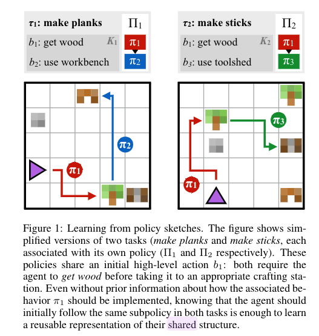

- Title: Modular Multitask Reinforcement Learning with Policy Sketches
- Author: Jacob Andreas et. al.
- Publish Year: 2017
- Review Date: Dec 2021
Background info for this paper:
Their paper describe a framework that is inspired by on options MDP, for which a reinforcement learning task is handled by several sub-MDP modules. (that is why they call it Modular RL)
They consider a multitask RL problem in a shared environment. (See the figure below). The IGLU Minecraft challenge as well as Angry Birds also belongs to this category.
 |
|---|
| The tasks (goals) and the associated states are different but they shared the same environment setting |
What is policy sketches:
- a structured, short sequence of language instructions for a single task
- different tasks may share same sketches. e.g., in the figure, they both have “get wood” instructions
Why do they want policy sketches:
- RL agents are difficult to learn a good policy in a multitask RL problem in a shared environment with sparse rewards only.
- The policy sketches helps to break a big task into smaller sub-task and thus may provide a smooth learning experience
What model they build to utilise policy sketches

- assign each short line $b_i$ with its own policy network $\pi_{b_{i}}$. Besides output actions based on current state, the policy network will also output STOP signal that informs the next policy $\pi_{b_{i+1}}$ to handle the following states
How is their result
- they shows that this sketch assisted modular model can obtain higher reward compared to a single policy model in this multitask, single environment RL problem
Their delimitations to break:
When we consider unstructured natural language instruction, the number of vocabulary in the corpora will be largely increased. In their work, they tried to keep a small size of vocabulary otherwise they need to maintain numerous policy networks (see figure below)

|
|---|
| In their experiments, they keep a very small size of vocabulary and therefore they can maintain feasible number of policy networks, the advantages are: 1. ensure enough training for each policy network 2. ensure enough knowledge sharing among different tasks |
For unstructured natural language instructions, the number of words will surge and we will face synonym, paraphrase etc.
But I assume that keep small number of policy network is necessary, so we may want to cluster the unstructured natural language instructions and let one policy network handle one cluster
Their assumptions to break
In their training algorithm, in order to provide a smooth learning experience, they start to select simple tasks to train first. Their assumption is: a brand new RL agent cannot solve complex tasks as they can easily get stuck in local optimum. (e.g., those RL tasks like Montezuma’s Revenge that require intensive exploration) (reasonable assumption)
So, if they provide it with simple tasks first, the agent can gain some basic knowledge about the environment and then it can continue to learn more complex tasks.
But, they assume that task with smaller length of policy sketch is considered as “simple”. e.g., see the figure above, “make rope” is simpler than “make bridge” due to a smaller length of the policy sketch.
This assumption is broken when we consider unstructured natural language instructions. For example, “building house” is not simpler than “moving towards north for two steps”
Therefore, a new algorithm that can rate the difficulty of tasks based on the unstructured natural language instructions is needed